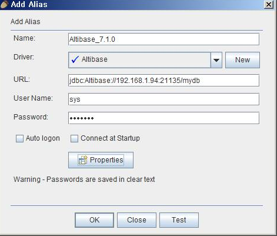
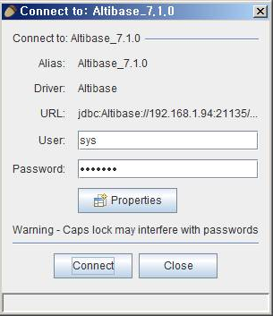
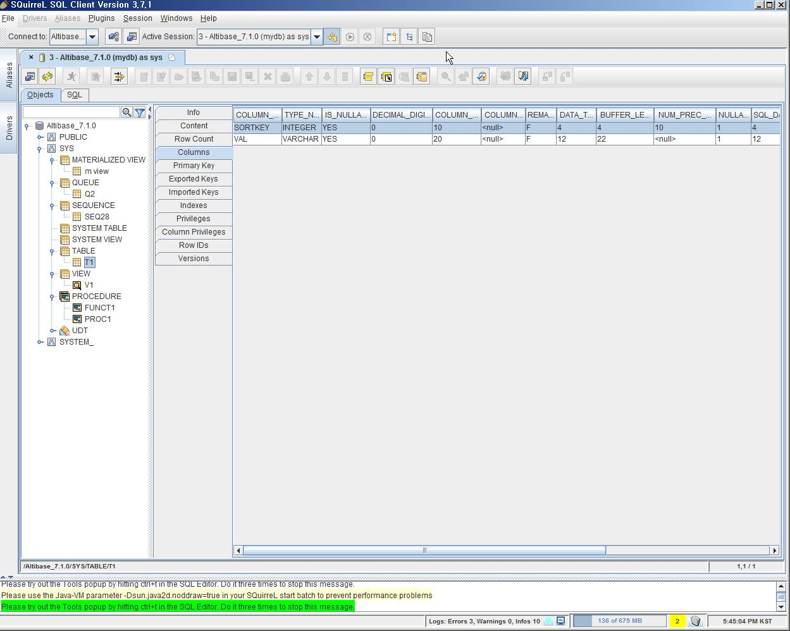
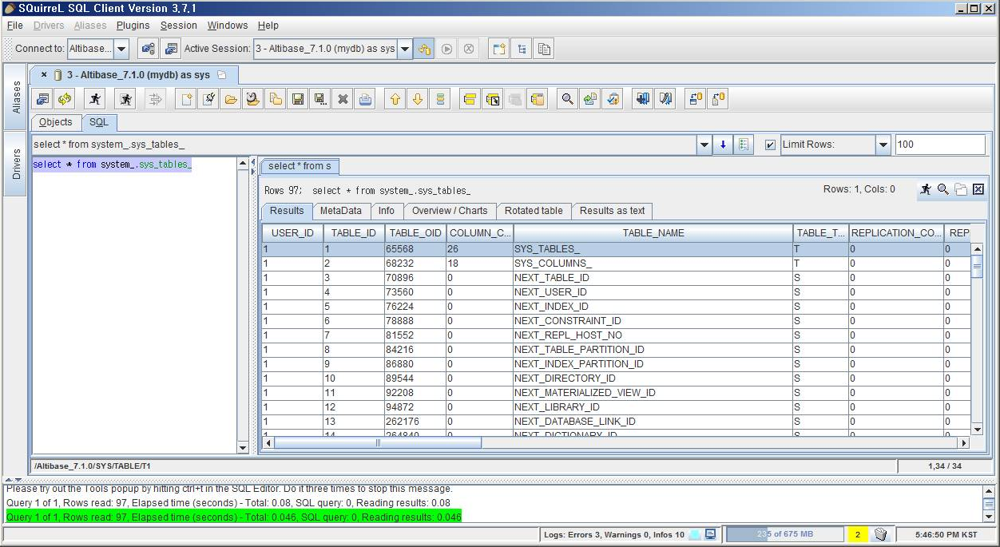

3.1 Database Connection Information Registration
- Click Aliases -> New Alias in the main menu to register the database information to be accessed. If the Aliases menu is inactive, activate it by clicking Windows -> View Aliases.
Enter the information below.
Name: Database connection name Driver: Select Altibase that was registered earlier. URL: Enter the host, port, database name to connect to. User Name: Database user name to use for connection. Password: Password of database user to use for connection.
- After entering the information, click the "Test" button at the bottom to check if the entered connection information is correct.

3.2 Using Database
- Click Aliases -> Connect on the main menu to open the connection window.
 - Click the "Connect" button to connect to the registered database.
3.3 Objects
If the connection is successful, a window consisting of two tabes is opened as shown below. The Object window is selected by default, and objects and detailed information existing in the connected database can be viewed.

3.4 SQL
The user can enter and execute queries by selecting SQL among the two tabs at the top.

{kind=link}
{kind=link}
{kind=link}
{kind=link}